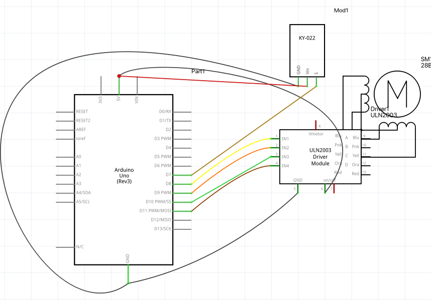

Schematics
Below I list exactly how to hookup your Arduino Board with the parts listed:
1. Ir receiver
The IR receiver has 3 pins. Vcc to 5v. GND to ground of Arduino. signal pin to pin 7 of Arduino pin.
2. stepper motor
connect the stepper motor to the stepper motor driver
3. stepper motor driver
The stepper motor driver has many pins. Vcc to 5v. GND to ground of Arduino. IN1 to pin 8 of Arduino board. IN2 to pin 9 of Arduino board. IN3 to pin 10 of tArduino board. IN4 to 11
